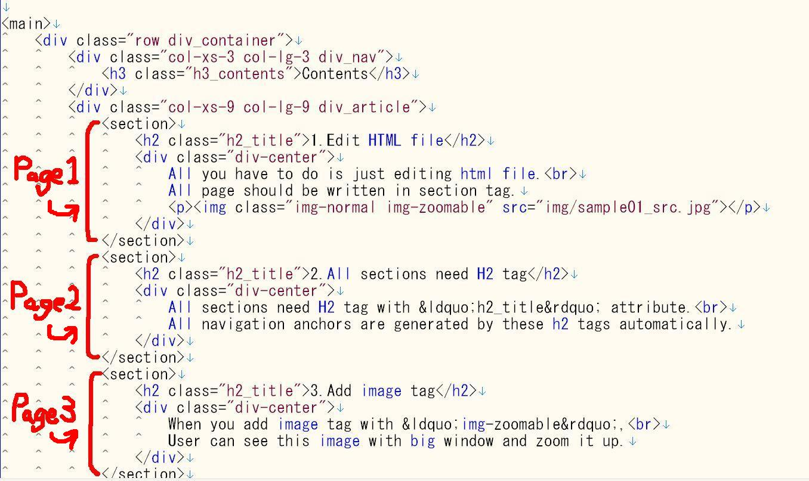
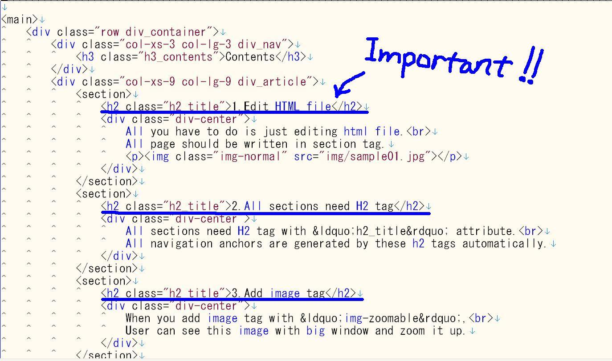
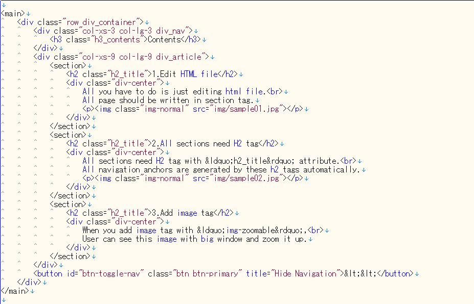

Contents
1.Edit HTML file
All you have to do is just editing html file.
All page should be written in section tag.
All page should be written in section tag.

2.All sections need H2 tag
All sections need H2 tag with “h2_title” attribute.
All navigation anchors are generated by these h2 tags automatically.
All navigation anchors are generated by these h2 tags automatically.

3.Add image tag
When you add image tag with “img-zoomable”,
User can see this image with big window and zoom it up.
User can see this image with big window and zoom it up.

Click this image !!
4.You can hide Navigation
Click this small button, just to show & hide navigation
You can see the contents in while window.
You can see the contents in while window.